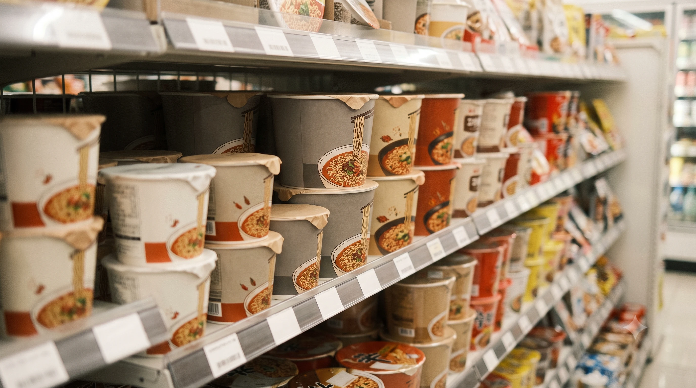
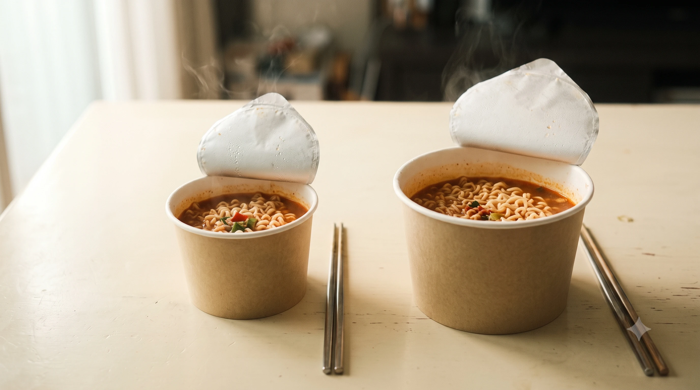
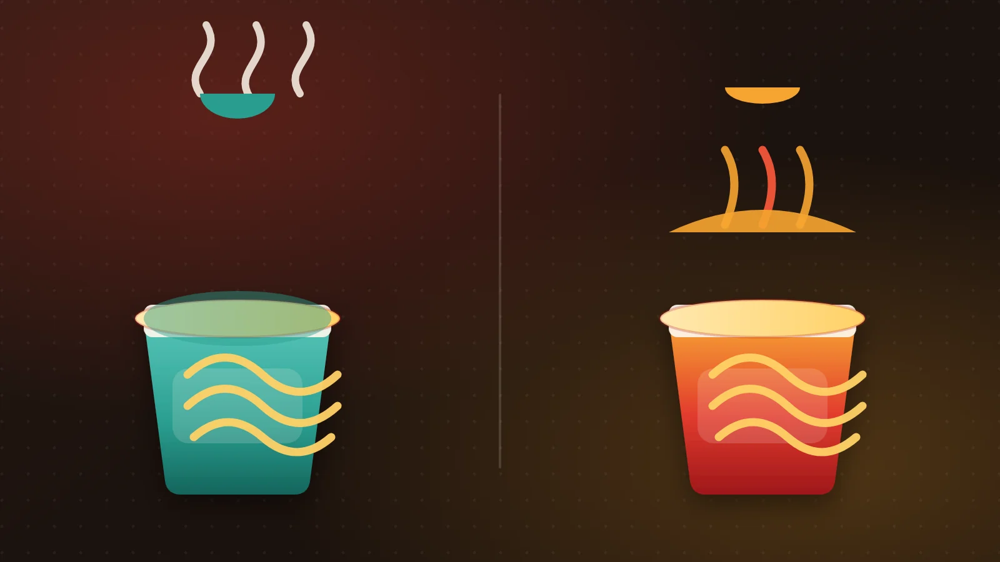
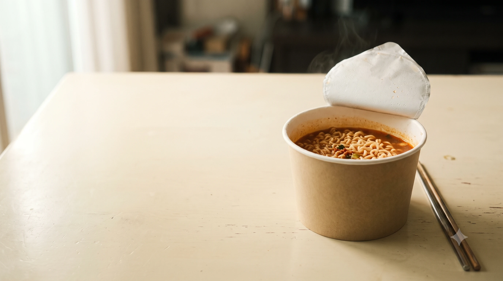

편의점 컵라면을 데이터로 읽다
같은 1,080원,
65g과 104g.
무엇을 고를까?
컵라면 40종의 가격·중량·영양표시를 읽는
데이터 스토리텔링
진라면 매운맛 컵 65g ↔ 육개장 컵 104g
오뚜기몰 수집 판매가격 · 두 제품 모두 1,080원
가격표만으로 얼마나 알 수 있을까?

이번 분석의 ‘가성비’는 용량 대비 가격을 뜻한다. 맛이나 만족도를 평가하지 않는다.
보존된 원본 202행에서 컵라면 40종으로
- 01컵라면·용기면 선정 목록 적용
- 02동일 제품은 묶음수량이 적은 행 선택
- 03묶음 판매가격 ÷ 수량 → 개당가격
- 04확인되지 않은 값은 결측으로 보존
수집·해석에서 구분할 것
가격·영양 출처는 제조사·공식몰.농심몰 · 오뚜기몰 · 삼양식품 · 팔도
컬리는 원본 후보에 포함, 최종 40종 출처는 4곳.
정확한 수집일 · 할인·배송비 처리 기준은
보존 자료에서 확인되지 않았다.
기존 ‘282건’은 스크립트의 후보 수 기록.
원본 202행과의 차이는 검증 대기.
이 자료는 선정된 온라인 상품 표본이며, 편의점 전체 상품이나 현재 판매가를 대표하지 않는다.
40종이지만, 질문마다 표본이 다르다
선정 제품의 브랜드 구성
전체 n=40 · 농심 12 / 오뚜기 10 / 삼양 10 / 팔도 8
분석에 쓸 수 있는 값과 결측
| 분석 항목 | 보유 | 결측 |
|---|---|---|
| 가격 + 중량 | 32종 | 8종 |
| 열량·영양성분 | 14종 | 26종 |
| 가격 + 열량 | 6종 | 34종 |
영양 보유: 삼양 6종 · 팔도 8종
팔도는 가격·중량이 없어 가격 분석에서 빠진다.
결측은 0이 아니다. 해당 값이 확인되는 제품만 각 분석에 사용한다.
개당 평균은 비슷해도, 용량 기준은 다르다
브랜드별 평균 개당가격 · 원/개
전체 가격 보유 n=32 · 농심 n=12 / 오뚜기 n=10 / 삼양 n=10
브랜드별 평균 100g당 가격 · 원/100g
제품별 (판매가격 ÷ 묶음수량 ÷ 중량 × 100)의 단순평균
전체 표본의 개당 평균은 약 1,509~1,550원. 용량을 맞추면 브랜드 간 차이가 더 드러난다.
가격 하나로 중량을 설명하기는 어렵다
가격 × 중량 · 전체 n=32
모든 가격·중량 보유 제품 포함 · 점선은 전체 표본의 선형 추세
0.339 r
Pearson 상관 · 양의 관계가 관찰됨
동일 1,080원에서도
65g ↔ 104g진라면 매운맛 컵 / 육개장 컵
민감도 분석: 1종 제외 시 n=31 · r=0.411
제외 기준: 100g당 가격 > Q3 + 1.5·IQR
상한 2,761.57원/100g · 오류로 단정하지 않음

가격과 중량은 함께 움직이기도 하지만, 개별 제품의 중량은 직접 확인해야 한다.
열량 범위는 넓고, 가격과의 연결은 불확실하다
제품별 영양표시 열량 · kcal/개 · n=14
삼양 6종 · 팔도 8종 / 1개당 기록 · 원라벨 대조 대기
가격 × 열량 · 삼양 6종
전체 n=6 · r=0.157 / 가격·열량 동시 보유 제품만
제외에 따라 달라지는 결과가격 이상치 제외: n=5 · r=0.405
단백질 r=−0.027 (n=6), 제외 시 −0.136 (n=5)
소표본 탐색 결과 · 전체 컵라면으로 일반화 불가
영양표시 열량은 280~535kcal. 가격으로 열량·단백질을 예측한다는 결론은 보류한다.
나트륨은 1개당 표시량과 중량을 함께 읽자
브랜드별 평균 나트륨 · mg/개
영양 보유 n=14 · 삼양 n=6 / 팔도 n=8 / 제품 구성·중량 미보정
중량 × 나트륨 · 삼양 6종
전체 n=6 · r=0.687 / 이상치 제외 n=5 · r=0.714
탐색적 관계 · 인과관계 아님n=5·6 모두 삼양 일부 제품에 한정.
중량 보정 나트륨은 이 6종에서 895.7~1,472.7mg/100g.
브랜드 평균 차이는 선정 제품의 차이이기도 하다. 실제 섭취 나트륨을 측정한 결과는 아니다.
유형별 차이는 보이지만, 분류 확인이 먼저다

나트륨 평균 · mg/개
국물형 n=6 / 볶음형 n=6 · 원자료 유형 기준
당류 평균 · g/개
국물형 n=6 / 볶음형 n=6 · 원자료 유형 기준
영양 14종 중 유형 미분류 2종 제외 · 브랜드 구성과 중량 미보정 · 유형별로 서로 다른 제품 비교
잠정 탐색값: 국물형은 나트륨, 볶음형은 당류 평균이 높다.‘큰컵 간짬뽕’의 국물형 표기 등 원자료 분류는 재확인 필요. 분류를 임의 수정하지 않았다.
이는 현재 분류된 표본의 기술통계다. 유형 전체의 특성이나 실제 섭취량 차이로 확대하지 않는다.
용량 대비 가격은 100g으로 맞춰 비교한다
100g당 가격 순위 · 원/100g · 전체 n=32 중 양끝 각 5종
오름차순 · 가운데 22종은 생략 / 전체 최소 1,005원 ↔ 최대 2,768원 / 약 2.75배
가격 이상치도 포함. 큰컵 치즈불닭볶음면 제외 시 n=31, 최대는 너구리컵 2,306원/100g.
낮을수록 용량 대비 저렴하다. 이 순위는 맛·영양 균형·만족도의 순위가 아니다.
데이터가 허용하는 결론은 여기까지
중량은 따로 확인
같은 1,080원에도 65g과 104g.가격·중량 n=32 · Pearson r=0.339 / 제외 후 n=31 · r=0.411
비교 기준은 100g
제품별 용량 대비 가격의 전체 범위는 약 2.75배.가격·중량 n=32 · 이상치도 포함 / 맛·만족도는 측정하지 않음
영양 해석은 신중히
가격과 영양의 관계는 삼양 6종의 탐색 결과.제외 후 n=5 분석도 일반화 불가 / 유형 분류·영양 라벨 대조 대기
가격은 출발점이다. 용량과 영양표시를 함께 읽어야 비교의 범위가 넓어진다.
다음 한 끼를 고를 때

가격만으로
용량과 영양을
판단하기 어렵다.
용량 대비 가격과 영양표시를
함께 보자.
선정 표본 40종 · 가격·중량 32종 · 영양 14종
가격–영양은 삼양 6종, 제외 후 5종의 탐색 결과
수집일·할인·배송비 기준 미확인 / 유형·원라벨 검증 대기